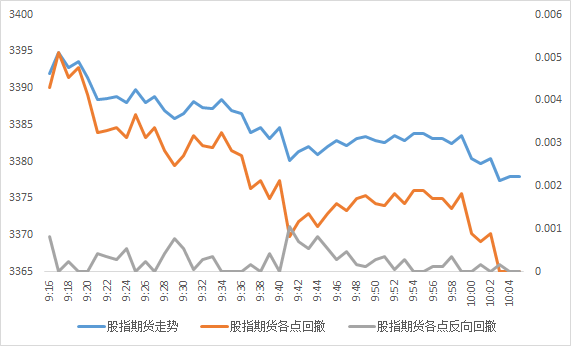

策略复现：基于市场情绪平稳度的股指期货日内交易策略¶
基于最大回撤的思想，量化市场情绪平稳度，构建期货日内交易策略。

本文复现的策略基于广发证券发布的研究报告《基于市场情绪平稳度的股指期货日内交易策略------另类交易策略之二十一》。
对策略的理解¶
量化开盘阶段的价格趋势¶
如果在开盘初期观察到"一致上涨"或"一致下跌"的行情，可以认为市场情绪平稳，价格走势呈现出一致的"趋势"。若这样的趋势在开盘后一直持续，我们只需要根据开盘时的趋势进行交易（上涨则做多，下跌则做空），等待趋势在盘中延续，并在趋势结束前平仓，即可获取利润。
相反，如果在开盘初期观察到"反复震荡"的行情，可以认为市场情绪不平稳，价格走势呈现出不一致的"波动"。对于这样的行情，我们很难判断开盘后接下来的走势，因此较难判断正确的交易方向。
如何量化开盘时的"趋势"和"波动"？从价格走势图来看，如果价格曲线几乎单调上涨或下跌，则趋势性更强。
最大回撤告诉我们：在\(i\)时刻开仓，到后续任意的时点平仓，最坏情况的亏损比例是多少？ $$ 最大回撤_i=\max_{j>i}\left( p_{i}-p_{j} \right) / p_{i} $$ 用"各个点的最大回撤的平均值"可以量化上涨的趋势：
-
假设有一个严格单调上涨的价格曲线，计算它在各个时间点的最大回撤，可以知道：每个时间点的最大回撤都是 0。如果把每个点的最大回撤求平均值，结果仍然是 0。
-
假设有一个几乎单调上涨的价格曲线，计算它在各个时间点的最大回撤，可以知道：几乎每个时间点的最大回撤都是 0。如果把每个点的最大回撤求平均值，结果应该是一个绝对值较小的数。
-
因此，如果各个点的最大回撤的平均值的绝对值越小，则这段时间的价格越呈现出上涨的趋势。
对于下跌的趋势，我们可以借鉴最大回撤的思想，构造"最大反向回撤"指标： $$ 最大反向回撤_i=-\min_{j>i}\left(p_{i}-p_{j}\right) / \mathrm{p}_{i} $$ 对于最大反向回撤，一个直觉的理解是：在\(i\)时刻开仓，到后续任意的时点平仓，最好的情况的盈利比例是多少？
类似地，用"各个点的最大反向回撤的平均值"可以量化下跌的趋势：
-
假设有一个严格单调下跌的价格曲线，计算它在各个时间点的最大反向回撤，可以知道：每个时间点的最大反向回撤都是 0。如果把每个点的最大反向回撤求平均值，结果仍然是 0。
-
假设有一个几乎单调下跌的价格曲线，计算它在各个时间点的最大反向回撤，可以知道：几乎每个时间点的最大反向回撤都是 0。如果把每个点的最大反向回撤求平均值，结果应该是一个较小的数。
-
因此，如果各个点的最大反向回撤的平均值的绝对值越小，则这段时间的价格越呈现出下跌的趋势。

对于期货资产，投资者既可以做多也可以做空，因此"上涨趋势"和"下跌趋势"都可以作为交易信号。我们将平均最大回撤和平均最大反向回撤中较小的那一个，作为市场情绪平稳度指标。市场情绪平稳度指标越小，则上涨或者下跌的趋势越强。然后我们再根据具体是上涨还是下跌的趋势，即可判断交易方向。
确定观察窗口、情绪平稳度阈值等参数¶
观察窗口¶
观察趋势需要在开盘后的一段时间进行，具体应该观察多久再确定趋势？如果观察的时间太短，可能因为样本不足而导致错误的判断；如果观察的时间太长，可能即使判断得非常准确，但由于花费了大量时间观察趋势，导致开仓时间太晚，损失了一段时间的趋势带来的收益。因此，我们需要寻找到较为合适的观察窗口参数。报告原文设置的是 50 分钟，即从 9: 16 末开始，到 10: 06 初结束。
情绪平稳度阈值¶
上一节讨论了如何量化趋势，我们仅从定性的角度判断：市场情绪平稳度指标越小，则上涨或者下跌的趋势越强。那么，市场情绪平稳度指标究竟要多小，才能认为上涨或者下跌的趋势强到可以作为交易信号了呢？因此，我们需要设置一个情绪平稳度阈值参数，当市场情绪平稳度小于这个阈值，则认为出现了趋势发出的交易信号。报告原文设置的是\(9/10000\)。
止损阈值¶
对趋势方向的判断可能出错，加入止损机制可以避免造成过大的亏损。例如，某日开盘时趋势较强，但盘中出现较大反转，这会导致亏损。因此，我们可以设置一个止损阈值，在开仓后的每一分钟计算浮动盈亏，判断浮动亏损是否超过止损阈值，若超过则提前止损平仓。
交易成本¶
报告原文设置的是\(2/10000\)，在计算收益时注意减去交易成本即可。
多次开仓策略¶
基础策略只在上午开盘时观察趋势，若上午开仓则一直持有至下午收盘再平仓（提前止损平仓除外）。但上午的趋势可能持续时间并不长，到下午时趋势可能已经消失，甚至出现反转的趋势。为了避免这种情况造成的损失，我们可以在上午和下午分别判断趋势。
具体来说，在上午开盘时判断趋势后，若开仓，则在上午 11: 30 时需要平仓。下午的观察窗口从 11: 12 末开始，到 13: 32 初结束，一共 50 分钟（观察窗口的总长度和上午相同）。若下午开仓，则持有至收盘平仓（提前止损平仓除外）。
复现步骤¶
将原始的分钟数据按日期储存到字典中¶
原始的数据是一个 csv 文件，如果整体进行读写操作会比较耗时。因此可以按日期储存到一个字典中。这个字典的key是日期，value包含这一日期所有分钟的开盘价和收盘价（其他数据，如最高价、交易量等，在本策略中不需要用到）。
def separate_data(file_path):
separated_data = Configuration.separated_data
# ======打开原始数据文件并读取
file = open(file_path, "r")
# 读入csv文件的所有行
all_data = csv.reader(file)
# ======分行存放数据到separated_data中
count = 0
for one_minute in all_data:
# 跳过列名所在的行，即第1行
if count == 0:
count = 1
continue
# 提取这一行数据的日期、开盘价、收盘价
one_minute_date = one_minute[0].split(" ")[0] # 只提取日期，即X年X月X日
one_minute_data = dict(
date_and_time=one_minute[0],
open=float(one_minute[1]),
close=float(one_minute[2]),
)
# 判断separated_data中是否已有今天的部分分钟数据。如果有，则需要新增当前分钟的数据；如果没有，则需要新建空列表，再新增当前分钟的数据
if one_minute_date in separated_data.keys():
previous_minute_data = separated_data[one_minute_date]
else:
previous_minute_data = []
# 新增当前分钟的数据
previous_minute_data.append(one_minute_data)
separated_data[one_minute_date] = previous_minute_data
# 关闭文件
file.close()
储存标的资产的收盘价数据¶
后续绘图时需要用到标的资产的收盘价数据，可以从上一步构造的字典中提取。
# 计算保存沪深300期货所有的日期和收盘价数据
underlying_asset_date_list = Configuration.underlying_asset_date_list
underlying_asset_close_price_list = Configuration.underlying_asset_close_price_list
for date in separated_data:
data_of_date = separated_data[date] # 每天的数据
len_of_data_of_date = len(data_of_date)
close = data_of_date[len_of_data_of_date - 1]["close"] # 标的资产每天的收盘价
underlying_asset_date_list.append(date)
underlying_asset_close_price_list.append(close)
计算市场情绪平稳度的函数¶
根据报告中的定义，求每一分钟的最大回撤与最大反向回撤，再对所有分钟的结果求平均值，最后取两个平均值中较小的那个作为市场情绪平稳度。
def get_stability(window_data):
# 获取观察窗口的长度，便于后续求平均值
length = len(window_data)
# 将最大回撤与最大反向回撤的和初始化
sum_max_draw_down = 0.0
sum_max_adverse_draw_down = 0.0
for minute_i in range(0, length):
close_i = window_data[minute_i]["close"]
max_draw_down = 0.0 # 将此分钟至观察窗口结束时的最大回撤初始化
max_adverse_draw_down = 0.0 # 将此分钟至观察窗口结束时的最大反向回撤初始化
# 从下一分钟开始，至观察窗口结束，遍历所有分钟的收盘价
for minute_j in range(minute_i + 1, length):
close_j = window_data[minute_j]["close"]
# 求i到j的回撤值
draw_down = 1 - close_j / close_i
# 如果遇到了更大的下跌幅度，则将其更新为最大回撤
if draw_down > max_draw_down:
max_draw_down = draw_down
# 如果遇到了更大的上涨幅度，则将其更新为最大反向回撤。注意，最大反向回撤本身为负值，说明j比i的价格高，即i到j的过程是上涨
if draw_down < max_adverse_draw_down:
max_adverse_draw_down = draw_down
# 添加到最大回撤与最大反向回撤的和中
sum_max_draw_down += max_draw_down # 把每一分钟的最大回撤相加
sum_max_adverse_draw_down += (
-max_adverse_draw_down
) # 把每一分钟的最大反向回撤相加（注意加负号，让最大反向回撤变成正值）
# 求最大回撤与最大反向回撤的平均值
mean_max_draw_down = sum_max_draw_down / length # 平均最大回撤
mean_max_adverse_draw_down = sum_max_adverse_draw_down / length # 平均最大反向回撤
# 比较平均最大回撤和平均最大反向回撤，将较小者作为市场情绪稳定度指标
if mean_max_draw_down <= mean_max_adverse_draw_down:
return mean_max_draw_down
else:
return mean_max_adverse_draw_down
在观察窗口计算开盘时的市场情绪平稳度¶
首先根据观察窗口的起止时间，提取出观察窗口的数据。
# 提取观察窗口上的数据
sample_observation = date_init_list[
sample_observation_begin_index:sample_observation_end_index
]
其中，sample_observation_begin_index和sample_observation_end_index来自window_start和window_end：
for date in Configuration.separated_data.keys():
# 当前日期所有的初始数据
all_data_today = Configuration.separated_data[date]
# 上午观察窗口起始索引
morning_window_start = 0
# 上午观察窗口结束索引
morning_window_end = 0
# 上午平仓索引（当策略在日内多次开仓时有效）
morning_position_close = 0
# 下午观察窗口起始索引（当策略在日内多次开仓时有效）
afternoon_window_start = 0
# 下午观察窗口结束索引（当策略在日内多次开仓时有效）
afternoon_window_end = 0
# 下午平仓索引
afternoon_position_close = 270 # 因为一天的交易时间包含270分钟
# ======标记特殊的分钟时点
for i in range(0, 270):
# 从当前日期所有的初始数据中，提取中这一分钟数据的精确到分钟的时间，即X年X月X日X时X分X秒
i_date_and_time = all_data_today[i]["date_and_time"]
if i_date_and_time.endswith(Configuration.morning_window_start_time):
morning_window_start = i
elif i_date_and_time.endswith(Configuration.morning_window_end_time):
morning_window_end = i
elif i_date_and_time.endswith(Configuration.morning_position_close_time):
morning_position_close = i
elif i_date_and_time.endswith(Configuration.afternoon_window_start_time):
afternoon_window_start = i
elif i_date_and_time.endswith(Configuration.afternoon_window_end_time):
afternoon_window_end = i
根据观察窗口上的数据，计算情绪平稳度指标。
根据情绪平稳度指标是否低于阈值判断是否开仓及开仓方向¶
# ======根据情绪平稳度指标的大小，判断是否需要开仓。若情绪平稳度小于阈值，则需要开仓
if emotional_stability < Configuration.stability_threshold:
# 提取观察窗口的开盘价
sample_observation_begin_open = date_init_list[sample_observation_begin_index][
"open"
]
# 提取观察窗口的收盘价
sample_observation_end_close = date_init_list[sample_observation_end_index - 1][
"close"
]
# 在观察窗口之后的下一分钟开盘立即开仓
execute_price = date_init_list[sample_observation_end_index]["open"]
# 如果观察窗口的收盘价大于观察窗口开盘价，则做多，反之则做空
if sample_observation_end_close > sample_observation_begin_open:
position = 1
else:
position = -1
# ======若情绪平稳度大于阈值，则不需要开仓
else:
transaction_data["details"].append(
dict(date=date_value, money=transaction_data["money"], is_open=0)
)
return
盘中根据亏损是否超过止损阈值决定是否提前止损平仓¶
# ======若开仓，则在盘中需要检查是否达到止损线。若亏损超过止损阈值，则提前止损平仓
for minute_i in range(sample_observation_end_index + 1, finish_index):
# 假设在minute_i的开盘价需要平仓，计算从开仓到平仓的浮动盈亏，便于判断浮动亏损是否超过止损阈值
closing_price = date_init_list[minute_i]["open"]
# 计算从开仓到平仓的浮动盈亏
floating_profit = get_profit(position, execute_price, closing_price)
# 如果浮动盈亏为损失，且亏损幅度大于止损阈值，则提前止损平仓
if floating_profit < 0 and abs(floating_profit) > Configuration.stop_loss_threshold:
transaction_data["money"] = transaction_data["money"] * (
1 + floating_profit - Configuration.transaction_fee
)
transaction_data["details"].append(
dict(date=date_value, money=transaction_data["money"], is_open=1)
)
return
# ======若在盘中检查发现都没有达到止损线，则收盘平仓
closing_price = date_init_list[finish_index - 1]["close"]
# 计算从开仓到平仓的实现盈亏（因为收盘必须平仓，所以浮动变成了实现）
realized_profit = get_profit(position, execute_price, closing_price)
transaction_data["money"] = transaction_data["money"] * (
1 + realized_profit - Configuration.transaction_fee
)
transaction_data["details"].append(
dict(date=date_value, money=transaction_data["money"], is_open=1)
)
return
将标的资产价格与各策略累计收益数据导出到本地表格¶
def export_to_output():
Configuration.underlying_asset_price = get_underlying_asset_price()
Configuration.cumulative_return_uni = get_cumulative_return(
Configuration.uni_transaction_data
)
# 由于每日多次开仓时，上午和下午各执行一次策略，因此每天会有两个交易数据
Configuration.cumulative_return_multi_all = get_cumulative_return(
Configuration.multi_transaction_data
)
# 将上午的交易数据剔除，只保留每天下午的交易数据，作为当天的累计收益率
selected = range(
1, Configuration.cumulative_return_multi_all.shape[0] + 1, 2
) # 间隔2个数据，提取1个
Configuration.cumulative_return_multi = (
Configuration.cumulative_return_multi_all.iloc[selected]
)
# 重置索引，否则索引之间会间隔1
Configuration.cumulative_return_multi.index = pd.RangeIndex(
len(Configuration.cumulative_return_multi.index)
)
# 分sheet导出数据
for sheet_name, sheet_data in zip(
["标的资产价格", "累计收益率-每日单次开仓", "累计收益率-每日多次开仓", "累计收益率-每日多次开仓（每日两个数据）"],
[
Configuration.underlying_asset_price,
Configuration.cumulative_return_uni,
Configuration.cumulative_return_multi,
Configuration.cumulative_return_multi_all,
],
):
with pd.ExcelWriter(
"标的资产价格与各策略累计收益表.xlsx",
mode="a",
if_sheet_exists="replace",
engine="openpyxl",
) as writer:
sheet_data.to_excel(writer, sheet_name=sheet_name, index=False)
根据标的资产价格与各策略累计收益数据绘图¶
def draw_cumulative_return_and_underlying_asset_price():
# ============画图
fig = plt.figure(figsize=(10, 6))
# ======绘制策略的累计收益
ax1 = fig.add_subplot(111)
ax1.xaxis.set_major_locator(MultipleLocator(30))
# 绘制单次开仓策略的累计收益
draw_cumulative_return("单次开仓策略", ax1)
# 绘制多次开仓策略的累计收益
draw_cumulative_return("多次开仓策略", ax1)
# 让y轴的刻度显示为百分比形式
plt.gca().yaxis.set_major_formatter(FuncFormatter(to_percent))
plt.ylabel("累计收益")
plt.legend(
loc="upper center",
bbox_to_anchor=(0.35, 0.95),
borderaxespad=0.0,
frameon=False,
)
# ======绘制标的资产的价格
ax2 = ax1.twinx() # 共用X轴
draw_underlying_asset_price(ax2)
plt.ylabel("标的资产价格", rotation=270, labelpad=15) # rotation让标签旋转，labelpad让标签远离坐标轴
plt.legend(
loc="upper center",
bbox_to_anchor=(0.65, 0.95),
borderaxespad=0.0,
frameon=False,
)
# ======输出图片
plt.savefig("标的资产价格与各策略累计收益图.pdf", bbox_inches="tight")
其中，绘制策略累计收益图的代码为：
def draw_cumulative_return(
strategy,
ax,
color_uni="#ed7d31",
color_multi="#5b9bd5",
label_uni="单次开仓策略累计收益（左轴）",
label_multi="多次开仓策略累计收益（左轴）",
):
for tick in ax.get_xticklabels():
tick.set_rotation(90)
if strategy == "单次开仓策略":
ax.plot(
Configuration.cumulative_return_uni["日期"],
Configuration.cumulative_return_uni["策略累计收益"],
color=color_uni,
linewidth=2,
label=label_uni,
)
elif strategy == "多次开仓策略":
ax.plot(
Configuration.cumulative_return_multi["日期"],
Configuration.cumulative_return_multi["策略累计收益"],
color=color_multi,
linewidth=2,
label=label_multi,
)
elif strategy == "多次开仓策略-上午":
# 将下午的交易数据剔除，只保留每天上午的交易数据
selected = range(
0, Configuration.cumulative_return_multi_all.shape[0], 2
) # 间隔2个数据，提取1个
# 计算每一个半天相对于前一个半天的累计收益变化
added_return = Configuration.cumulative_return_multi_all[
"策略累计收益"
] - Configuration.cumulative_return_multi_all["策略累计收益"].shift(1)
# 只将上午的收益进行累计
morning_added_return = added_return.iloc[selected]
# 将第一天上午的缺失值填充为0
morning_added_return.fillna(value=0, inplace=True)
# 将每天上午的收益进行累加
morning_cumulative_return = morning_added_return.cumsum()
ax.plot(
Configuration.cumulative_return_multi_all.iloc[selected]["日期"],
morning_cumulative_return,
color=color_multi,
linewidth=2,
label=label_multi,
)
elif strategy == "多次开仓策略-下午":
# 将上午的交易数据剔除，只保留每天下午的交易数据
selected = range(
1, Configuration.cumulative_return_multi_all.shape[0] + 1, 2
) # 间隔2个数据，提取1个
# 计算每一个半天相对于前一个半天的累计收益变化
added_return = Configuration.cumulative_return_multi_all[
"策略累计收益"
] - Configuration.cumulative_return_multi_all["策略累计收益"].shift(1)
# 只将下午的收益进行累计
afternoon_added_return = added_return.iloc[selected]
# 将每天下午的收益进行累加
afternoon_cumulative_return = afternoon_added_return.cumsum()
ax.plot(
Configuration.cumulative_return_multi_all.iloc[selected]["日期"],
afternoon_cumulative_return,
color=color_multi,
linewidth=2,
label=label_multi,
)
绘制标的资产价格图的代码为：
def draw_underlying_asset_price(ax):
ax.xaxis.set_major_locator(MultipleLocator(30))
ax.plot(
Configuration.underlying_asset_price["日期"],
Configuration.underlying_asset_price["标的资产价格"],
color="gray",
linewidth=2,
label="标的资产价格（右轴）",
)
绘制策略收益及其最大回撤图¶
def draw_cumulative_return_and_max_draw_down(strategy):
if strategy == "单次开仓策略":
df = Configuration.cumulative_return_uni
else:
df = Configuration.cumulative_return_multi
df = get_profit_and_loss(df)
total_days = df.shape[0]
for i in range(total_days):
df.loc[i, "最大回撤"] = df.iloc[i:]["累计净值"].min() / df.iloc[i]["累计净值"] - 1
# ============画图
fig = plt.figure(figsize=(10, 6))
# ======绘制策略的累计收益
ax1 = fig.add_subplot(111)
ax1.xaxis.set_major_locator(MultipleLocator(10))
# 绘制策略的累计收益
draw_cumulative_return(strategy, ax1)
# 让y轴的刻度显示为百分比形式
plt.gca().yaxis.set_major_formatter(FuncFormatter(to_percent))
plt.legend(
loc="upper center", bbox_to_anchor=(0.4, 0.08), borderaxespad=0.0, frameon=False
)
# 绘制策略的最大回撤
ax2 = ax1.twinx() # 共用X轴
ax2.xaxis.set_major_locator(MultipleLocator(30))
draw_max_draw_down(strategy, ax2)
plt.gca().yaxis.set_major_formatter(FuncFormatter(to_percent))
plt.legend(
loc="upper center",
bbox_to_anchor=(0.65, 0.08),
borderaxespad=0.0,
frameon=False,
)
# ======输出图片
plt.savefig(strategy + "累计与最大回撤图.pdf", bbox_inches="tight")
plt.savefig(strategy + "累计与最大回撤图.svg", bbox_inches="tight")
输出策略的绩效评价指标¶
def performance():
for strategy in ["单次开仓策略", "多次开仓策略"]:
if strategy == "单次开仓策略":
df = Configuration.cumulative_return_uni
else:
df = Configuration.cumulative_return_multi_all
# 找出样本内的最后一个数据所在的索引
is_in_sample_end = df["日期"] == "2013-01-04"
in_sample_end_loc = is_in_sample_end[is_in_sample_end].index.values[0]
# 样本内绩效评价
performance_dict_in_sample = get_performance_dict(df[:in_sample_end_loc])
performance_series_in_sample = pd.Series(
performance_dict_in_sample, name=strategy + "-样本内"
)
# 样本外绩效评价
performance_dict_out_of_sample = get_performance_dict(df[in_sample_end_loc:])
performance_series_out_of_sample = pd.Series(
performance_dict_out_of_sample, name=strategy + "-样本外"
)
# 合并样本内外的绩效评价指标到数据框
performance = pd.concat(
[performance_series_in_sample, performance_series_out_of_sample], axis=1
)
# 导出到本地表格
performance.to_excel(strategy + "绩效评价.xlsx", index=True)
其中，生成绩效评价指标字典的代码为：
def get_performance_dict(cumulative_return_data):
df = get_profit_and_loss(cumulative_return_data)
transaction_count = get_transaction_count(df)
average_open_length = get_average_open_length(df)
max_profit = get_max_profit(df)
max_loss = get_max_loss(df)
win_count = get_win_count(df)
loss_count = get_loss_count(df)
win_rate = get_win_rate(df)
average_profit = get_average_profit_for_every_win(df)
average_loss = get_average_loss_for_every_loss(df)
odds = get_odds(df)
max_draw_down = get_max_draw_down(df)
max_continuous_win = get_max_continuous_win(df)
max_continuous_loss = get_max_continuous_loss(df)
period_return = get_period_return(df)
annualized_return = get_annualized_return(df)
performance_dict = {
"交易总次数": transaction_count,
"平均持仓时间": average_open_length,
"最大单次盈利": max_profit,
"最大单次亏损": max_loss,
"获胜次数": win_count,
"失败次数": loss_count,
"胜率": win_rate,
"单次获胜平均收益率": average_profit,
"单次失败平均亏损率": average_loss,
"赔率": odds,
"最大回撤": max_draw_down,
"最大连胜次数": max_continuous_win,
"最大连亏次数": max_continuous_loss,
"累计收益率": period_return,
"年化收益率": annualized_return,
}
return performance_dict
其中，计算各项绩效指标的代码为：
def get_profit_and_loss(df):
df["累计净值"] = df["策略累计收益"] + 1
df["本交易周期相对于上一交易周期的盈利"] = df["累计净值"] / df["累计净值"].shift(1) - 1
return df
def get_transaction_count(df):
count = df["是否开仓"].value_counts()[1]
return count
def get_average_open_length(df):
# 对开仓的日期，求平均持仓时间
average_open_length = df[df["是否开仓"] == 1]["持仓时间"].mean()
return average_open_length
def get_max_profit(df):
max_profit = df["本交易周期相对于上一交易周期的盈利"].max()
return max_profit
def get_max_loss(df):
max_loss = df["本交易周期相对于上一交易周期的盈利"].min()
return max_loss
def get_win_count(df):
win_count = df[df["本交易周期相对于上一交易周期的盈利"] > 0.0].shape[0]
return win_count
def get_loss_count(df):
loss_count = df[df["本交易周期相对于上一交易周期的盈利"] < 0.0].shape[0]
return loss_count
def get_win_rate(df):
win_count = get_win_count(df)
loss_count = get_loss_count(df)
win_rate = win_count / (win_count + loss_count)
return win_rate
def get_average_profit_for_every_win(df):
df_win = df[df["本交易周期相对于上一交易周期的盈利"] > 0.0]
average_profit = df_win["本交易周期相对于上一交易周期的盈利"].mean()
return average_profit
def get_average_loss_for_every_loss(df):
df_loss = df[df["本交易周期相对于上一交易周期的盈利"] < 0.0]
average_loss = df_loss["本交易周期相对于上一交易周期的盈利"].mean()
return average_loss
def get_odds(df):
odds = -get_average_profit_for_every_win(df) / get_average_loss_for_every_loss(df)
return odds
def get_max_draw_down(df):
net_value = df["累计净值"]
cumsum = net_value.cummax()
max_draw_down = -max((cumsum - net_value) / cumsum)
return max_draw_down
def get_max_continuous_win(df):
df_transaction = df[df["本交易周期相对于上一交易周期的盈利"] != 0.0]
max_continuous_win = 0
# 将连胜次数初始化
continuous_win = 0
for i in range(1, df_transaction.shape[0]):
# 如果第i个交易结束时的净值比第i-1个交易结束时的净值大，则连胜次数+1
if df_transaction.iloc[i]["累计净值"] > df_transaction.iloc[i - 1]["累计净值"]:
continuous_win = continuous_win + 1
# 如果当前的连胜次数超过了之前记录的最大连胜次数，则更新max_continuous_win
if continuous_win > max_continuous_win:
max_continuous_win = continuous_win
# 如果第i个交易结束时的净值比第i-1个交易结束时的净值小，则连胜次数清零
else:
continuous_win = 0
return max_continuous_win
def get_max_continuous_loss(df):
df_transaction = df[df["本交易周期相对于上一交易周期的盈利"] != 0.0]
max_continuous_loss = 0
# 将连亏次数初始化
continuous_loss = 0
for i in range(1, df_transaction.shape[0]):
# 如果第i个交易结束时的净值比第i-1个交易结束时的净值小，则连亏次数+1
if df_transaction.iloc[i]["累计净值"] < df_transaction.iloc[i - 1]["累计净值"]:
continuous_loss = continuous_loss + 1
# 如果当前的连亏次数超过了之前记录的最大连亏次数，则更新max_continuous_loss
if continuous_loss > max_continuous_loss:
max_continuous_loss = continuous_loss
# 如果第i个交易结束时的净值比第i-1个交易结束时的净值大，则连亏次数清零
else:
continuous_loss = 0
return max_continuous_loss
def get_period_return(df):
# 最后一天的净值除以第一天的净值，再减1
period_return = df.iloc[-1]["累计净值"] / df.iloc[0]["累计净值"] - 1
return period_return
def get_annualized_return(df):
# 累计收益
period_return = get_period_return(df)
# df中总共包含的交易天数
len_df = df.shape[0]
# 如果数据中的日期有重复，说明这个数据是来自多次开仓策略的，因此其真实的交易天数等于len_df/2
if df["日期"].duplicated().sum() > 0:
len_df = len_df / 2
# 假设一年有250个交易日，将累计收益进行年化
annualized_return = 250 * period_return / len_df
return annualized_return
参数敏感性测试¶
创建参数字典，逐个执行策略，并绘制各参数下的策略累计收益。
from functions import *
# 新建字典，key为市场情绪平稳度阈值，value为折线图颜色
stability_threshold_dict = {
7 / 10000: ["#5b9bd5"],
8 / 10000: ["#ed7d31"],
9 / 10000: ["#a5a5a5"],
10 / 10000: ["#ffc000"],
11 / 10000: ["#4472c4"],
}
# 新建字典，key为观察窗口时间长度，value包含观察窗口的结束时间和折线图颜色
morning_window_length_and_end_time_dict = {
48: ["10:04:00", "#5b9bd5"],
49: ["10:05:00", "#ed7d31"],
50: ["10:06:00", "#a5a5a5"],
51: ["10:07:00", "#ffc000"],
52: ["10:08:00", "#4472c4"],
}
# 新建字典，key为观察窗口时间长度，value包含观察窗口的结束时间和折线图颜色
afternoon_window_length_and_end_time_dict = {
31: ["13:31:00", "#5b9bd5"],
32: ["13:32:00", "#ed7d31"],
33: ["13:33:00", "#a5a5a5"],
34: ["13:34:00", "#ffc000"],
35: ["13:35:00", "#4472c4"],
}
值得注意的是，报告对于多次开仓策略的观察窗口长度参数的测试方法为：将上午和下午的观察窗口分别进行测试。在变换上午观察窗口后，只绘制每天上午的累计收益，因此只需要累加上午的收益。这一细节是在draw_cumulative_return()函数中用判断strategy来实现的。
复现结果¶
标的资产价格与单次开仓策略和多次开仓策略的累计收益¶
单次开仓策略累计与最大回撤¶

单次开仓策略绩效评价¶
| 单次开仓策略 - 样本内 | 单次开仓策略 - 样本外 | |
|---|---|---|
| 交易总次数 | 335 | 208 |
| 平均持仓时间 | 164.28 分钟 | 171.37 分钟 |
| 最大单次盈利 | 5.63% | 4.20% |
| 最大单次亏损 | -0.88% | -0.98% |
| 获胜次数 | 163 | 102 |
| 失败次数 | 172 | 105 |
| 胜率 | 48.66% | 49.28% |
| 单次获胜平均收益率 | 1.15% | 0.77% |
| 单次失败平均亏损率 | -0.49% | -0.47% |
| 赔率 | 2.33 | 1.62 |
| 最大回撤 | -5.01% | -4.61% |
| 最大连胜次数 | 8 | 9 |
| 最大连亏次数 | 7 | 8 |
| 累计收益率 | 172.62% | 32.12% |
| 年化收益率 | 65.29% | 15.97% |
单次开仓策略不同开仓阈值下资产累计收益¶

单次开仓策略不同开仓时间条件下资产累计收益¶

多次开仓策略累计与最大回撤¶

多次开仓策略绩效评价¶
| 多次开仓策略 - 样本内 | 多次开仓策略 - 样本外 | |
|---|---|---|
| 交易总次数 | 755 | 486 |
| 平均持仓时间 | 82.82 分钟 | 83.10 分钟 |
| 最大单次盈利 | 4.54% | 3.59% |
| 最大单次亏损 | -1.15% | -1.03% |
| 获胜次数 | 383 | 229 |
| 失败次数 | 372 | 256 |
| 胜率 | 50.73% | 47.22% |
| 单次获胜平均收益率 | 0.68% | 0.53% |
| 单次失败平均亏损率 | -0.39% | -0.37% |
| 赔率 | 1.74 | 1.42 |
| 最大回撤 | -5.34% | -6.98% |
| 最大连胜次数 | 10 | 8 |
| 最大连亏次数 | 8 | 9 |
| 累计收益率 | 209.90% | 28.42% |
| 年化收益率 | 79.39% | 14.13% |
多次开仓策略不同上午开仓时间条件下资产累计收益¶

多次开仓策略不同下午开仓时间条件下资产累计收益¶

多次开仓策略不同开仓阈值下资产累计收益¶

对策略的评价¶
优点¶
- 创新地构造出最大反向回撤指标，用于量化下跌趋势。配合最大回撤指标，即可量化上涨或下跌的趋势。
- 策略的参数较少，且各参数的稳健性较强。
缺点¶
- 没有考虑趋势是否延续，不能识别趋势是否发生反转。虽然在观察窗口可以量化趋势的强度，但若趋势的延续性不佳，则后续可能发生反转。
- 只有止损机制，当策略开始反转但亏损小于止损阈值时，会有少量亏损。
对策略的改进：加入止盈机制¶
观察部分行情数据，我们可以发现，有时市场会出现趋势反转的情况：例如，在开盘时价格表现出较强的趋势性，该趋势持续一段时间后便出现反转甚至"跳水"。对此，我们可以考虑在策略中加入止盈机制，当盘中浮动盈亏超过止盈阈值时则提前止盈平仓。具体的实现代码与止损机制类似。
对单次开仓策略测试不同水平的止盈阈值，实证结果如下：
单次开仓策略不同止盈阈值下资产累计收益¶

可以发现，止盈阈值设为 4% 或以上时，累计收益较高。止盈阈值过低，会损失部分收益。
对比是否加入止盈机制的策略¶
单次开仓策略样本外的绩效指标（止盈阈值为 4%）¶
| 不加入止盈机制 | 加入止盈机制 | |
|---|---|---|
| 年化收益 | 15.97% | 16.08% |
| 最大回撤 | -4.61% | -4.61% |
多次开仓策略样本外的绩效指标（每天两次开仓机会，止盈阈值为 2%）¶
| 不加入止盈机制 | 加入止盈机制 | |
|---|---|---|
| 年化收益 | 14.13% | 15.56% |
| 最大回撤 | -6.98% | -6.98% |
可以发现，加入止盈机制后的策略收益均有一定的提高。
进一步改进的方向：动态止盈¶
止盈机制的加入能够避免后续行情反转带来的损失，但也可能会损失市场趋势继续保持带来的利润。
为了权衡这两种情况，我们可以对不同的趋势强度设置不同的止盈阈值。例如，若观察窗口的趋势非常强（即市场情绪稳定度远低于阈值），可以认为出现反转的概率较小，则可以设置较高的止盈阈值。反之，若观察窗口的趋势较弱（即市场情绪稳定度仅略微低于阈值），则可以设置较低的止盈阈值，赚取到一小部分利润后即可提前止盈平仓，避免较大可能出现的反转带来的损失。